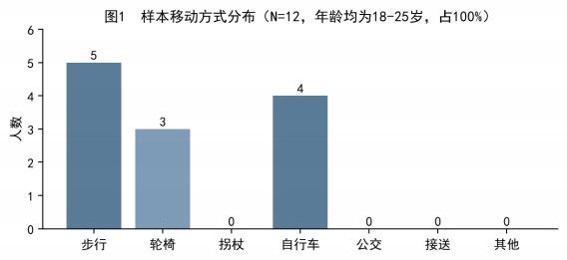
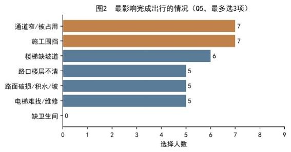
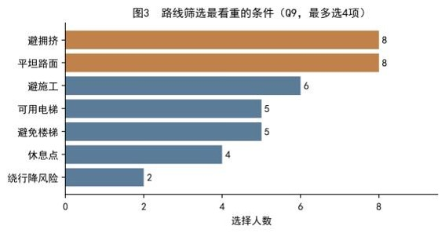
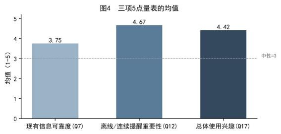
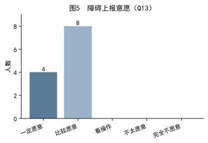
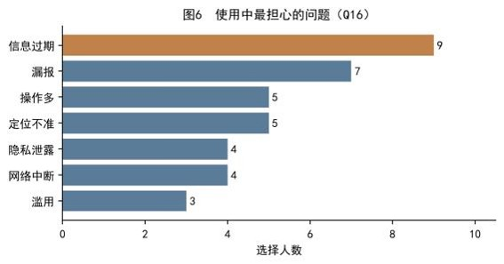
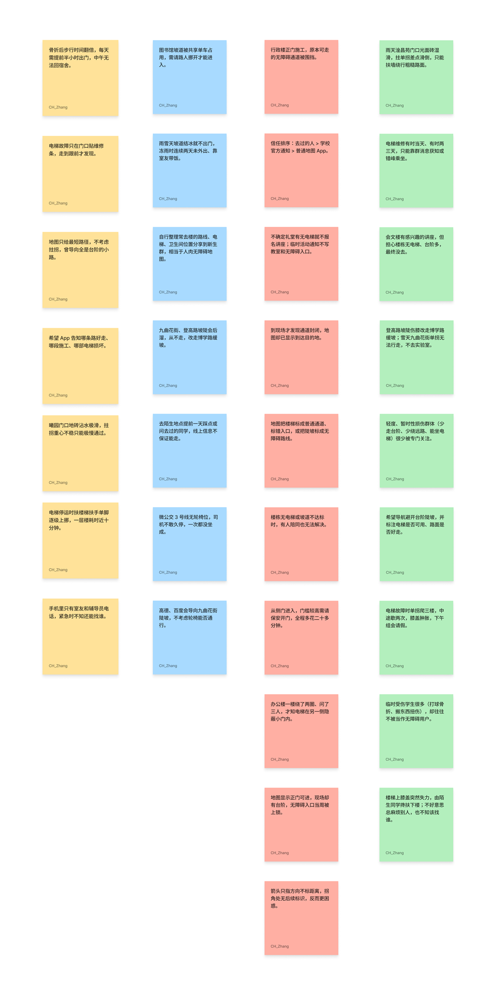
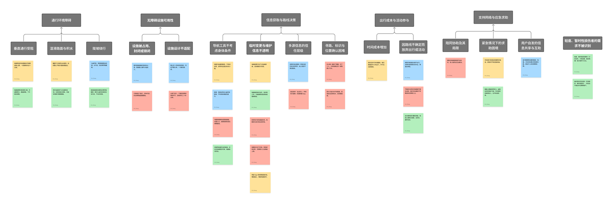

项目总览 / 03
数据收集结果
12 份有效问卷和 4 次半结构化访谈，经过统计与亲和图归纳之后，留下了这些发现和结论。
00 / 结果概览
问卷回答“多少人”，
访谈回答“为什么”
问卷回答的是“有多少人遇到了什么问题”，亲和图回答的是“这些问题之间是什么关系”。下面按两份分析材料的原有顺序呈现：先看问卷的量化结果，再看访谈的定性归纳。
全部为山东大学青岛校区学生，年龄均为 18-25 岁，答题完整。
逐句提取具体观点和经历，共形成 33 张便利贴。
其中 1 个主题不隶属于任何高级主题。
01 / 问卷数据分析
问卷：量化之后的需求优先级
本次共回收有效问卷 12 份，全部为山东大学青岛校区学生，答题完整。
1数据概览（描述性统计）
从人口统计看，样本年龄集中在 18-25 岁，占 100%；日常移动方式以步行为主（5 人），其次是自行车（4 人）和轮椅（3 人），没有使用拐杖、公交或由他人接送的受访者。样本中包含 3 位轮椅使用者，且多数人都有过临时受伤的经历，他们对校园路线的反馈具有代表性。

在被问到“按照现有路线指引走、遇到不符合预期的情况（如楼梯挡路、电梯维修）的频率”时，1 人表示从未，5 人表示很少，6 人表示偶尔，没有人选择经常或几乎每次。这说明路线信息与实际情况不一致是比较普遍的现象，并非偶发，因此一款能反映实时路况的产品有现实需求。
2关键发现
（1）最影响出行的情况。在“最影响完成出行的情况”中，“通道狭窄/被占用”和“施工围挡”并列最高，各有 7 人选择；其次是“楼梯缺坡道”（6 人）。“电梯难找/维修”“路面破损/积水/坡”“路口楼层不清”也都有 5 人选择，说明问题不是单一的，而是分散在通行的各个环节。

（2）路线筛选的偏好。在路线筛选时，“平坦路面”和“避开拥挤路段”最受重视，各有 8 人选择；“避开施工”6 人，“可用电梯”和“避免楼梯”各 5 人。这表明用户对路线的期望首先是好走、顺畅，而不是单纯追求最短距离。

（3）量表评价。三项 5 点量表中，“离线/连续提醒的重要性”均值最高（4.67），“总体使用兴趣”也较高（4.42），而“现有信息的可靠度”仅 3.75，是三者中最低的。这说明用户对现有导航提供的无障碍信息并不完全信任，但对一款在无网络时也能持续提醒的产品有很强的期待。

（4）障碍上报意愿。在障碍上报意愿上，12 人全部愿意（4 人一定愿意，8 人比较愿意），没有任何人表示不愿意。这为产品的众包数据模式提供了良好的用户基础。

（5）最担心的问题。在使用中最担心的问题上，“信息过期”以 9 人高居首位，其次是“漏报”（7 人），“定位不准”和“操作过多”各 5 人。这与前面“可靠度评分偏低”的发现一致——用户最在意的是信息是否及时、准确，这也提示产品必须把数据更新机制放在首位。

3学到了什么
问卷分析让我们对用户需求有了量化的认识。原先我们以为产品的核心是规划最短路线，但数据显示，用户更在意的是路线是否平坦好走、能否避开施工和拥挤，以及信息是否及时可靠。“信息过期”是用户最担心的问题，而“离线/连续提醒”是他们最看重的功能，这两点直接调整了我们的设计优先级。同时，12 人全部愿意上报障碍，说明众包采集在校园场景是可行的，但前提是上报要足够简单、信息能被及时核实。
02 / 亲和图分析
亲和图：把零散的个案连起来
1方法说明
为了从问卷和访谈中提炼出共性的问题，我们制作了亲和图。首先，我们从 4 份访谈记录中，逐句提取出具体的观点和经历，写在便利贴上，每条便利贴只表达一个观点，共 33 张，这个阶段只做记录、不做归类。随后，我们在 FigJam 在线白板上把便利贴按相似性分组，先归纳出主题（head），再把主题归入高级主题（superhead）。整个过程是渐进的，我们保留了每个版本的历史记录。
2原始数据提取（33 张便利贴，尚未归类）

3制作过程
制作过程中使用 FigJam 在线白板。
4主题分类
对 33 张便利贴归类后，我们得到 15 个主题和 5 个高级主题。14 个主题归入 5 个高级主题，另有 1 个主题没有上级的高级主题。
-
通行环境障碍3 个主题
垂直通行受阻、湿滑路面与积水、陡坡绕行
-
无障碍设施可用性2 个主题
设施被占用/封闭/锁闭、设施设计不适配
-
信息获取与路线决策4 个主题
导航不考虑身体条件、临时变更不透明、多源信息信任层级、寻路标识困难
-
出行成本与活动参与2 个主题
时间成本增加、因不确定放弃出行
-
支持网络与应急求助3 个主题
陪同协助的局限、紧急求助困境、用户自发互助
-
轻度、暂时性损伤者的需求不被识别1 个主题，无高级主题
这个主题不隶属于任何高级主题，单独作为一个主题保留。

图表较宽，缩略图上的文字较小，点击图片可打开原尺寸版本查看细节。
5学到了什么
亲和图帮助我们跳出了零散的个案，看到了问题之间的联系，我们有两个意料之外的发现：
- “有设施”不等于“设施可用”。我们原以为主要问题是设施缺失，但数据显示，更常见的是设施被临时占用、围挡或上锁；电梯这一单点设施一旦故障，整栋楼就不可达。
- 我们原先对无障碍需求人群数量的估计存在偏差。临时性损伤者（如骨折、扭伤）的数量可能被低估，他们的需求长期不被识别，但其实是校园里很大的一个群体。